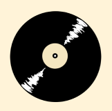
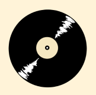

KEUNE KIDS
Ik heb op de Haagse Hogeschool de minor 'Package Design & Innovation' gedaan. Waarbij we een samenwerking hadden met het haarcosmetica bedrijf KEUNE. Hierbij kregen we de opdracht om een shampoo product te ontwerpen die bij hun premium stijl past.

Ontwerpvisie
Voor dit project ontwikkelden we een nieuwe shampooverpakking voor KEUNE, gericht op een doelgroep waar het merk nog niet op inspeelde: kinderen. We kozen bewust voor deze richting omdat kindvriendelijke, premium haarproducten nauwelijks aanwezig zijn in salons, terwijl ze wél bijdragen aan een positieve salonervaring voor zowel kind als ouder.
De kameleon werd het centrale mascotte-element. Dit dier staat voor transformatie, aanpassing en zachtheid waarden die perfect aansluiten bij KEUNE's professionele en minimalistische identiteit. Door de vorm subtiel in de fles te verwerken blijft het ontwerp speels, maar niet speelgoedachtig.
Een belangrijk detail is de thermochromische inkt op de "ruggengraat" van de kameleon. Deze verandert van kleur wanneer de fles wordt vastgehouden, waardoor het product interactief en aantrekkelijk wordt voor kinderen, zonder KEUNE's premium uitstraling te verliezen.
Het resultaat is een zachte, organische flesvorm die zowel functioneel als esthetisch in lijn ligt met KEUNE: elegant, modern en toch uitnodigend voor jonge gebruikers.


 



 1.png)